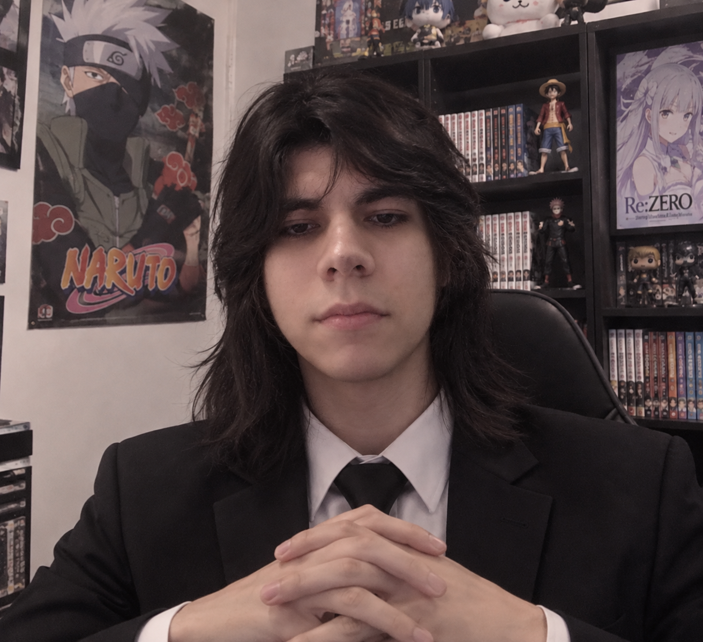

Caperucin Baltazar
Especialista en Coleccionismo y Gestión de Artículos de Cultura Anime.
Profesional independienteHola, soy Caperucito.
Profesional dedicado a la compra de figuras Anime y Mangas de todo tipo
Profesional especializado en la adquisición, clasificación y conservación de artículos relacionados con la industria del anime, manga y entretenimiento japonés. Cuento con experiencia en la búsqueda de productos exclusivos, identificación de ediciones especiales y gestión de colecciones de alto valor cultural y comercial.
Mi interés por la cultura japonesa me ha permitido desarrollar conocimientos especializados sobre diferentes franquicias, editoriales, fabricantes y distribuidores internacionales, manteniéndome constantemente actualizada sobre las novedades del mercado.
Información personal
| Nombre completo | Pipe Caperucin Baltazar Sahur |
|---|---|
| Edad | 28 años |
| Nacionalidad | Boliviana |
| Ciudad | Santa Cruz de la Sierra |
| Profesión | Ingeniero en Animeologia |
Contacto
Para consultas profesionales, propuestas de trabajo o colaboraciones, puedes comunicarte conmigo mediante los siguientes medios.